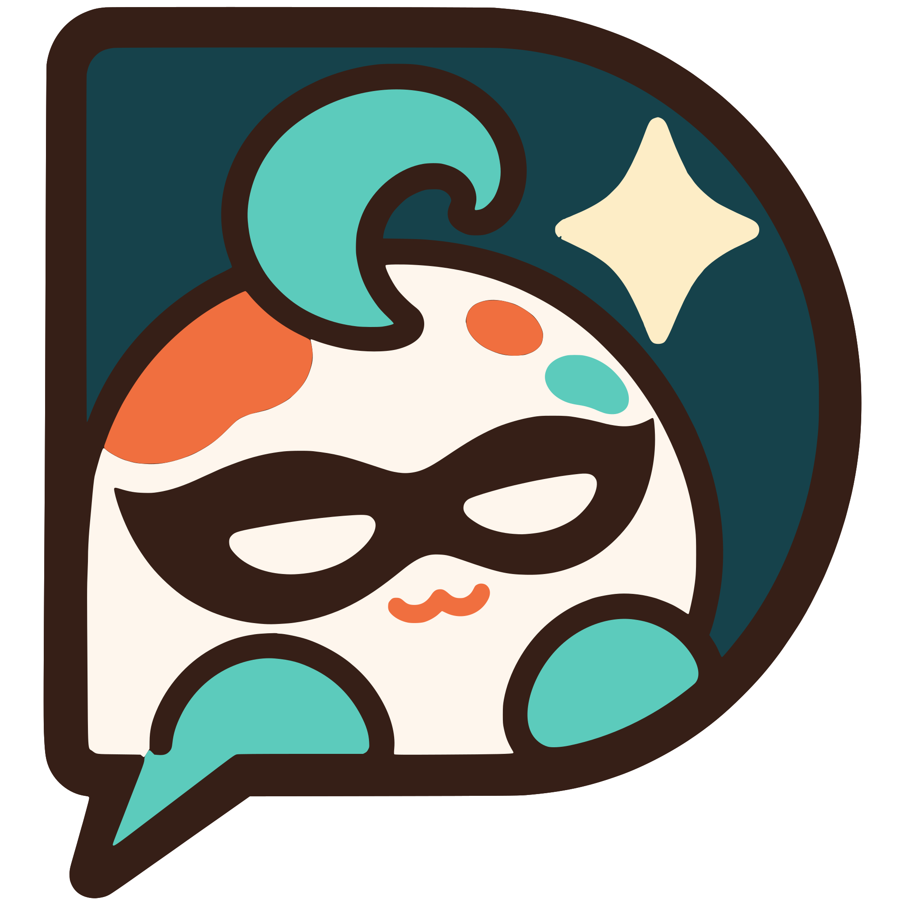
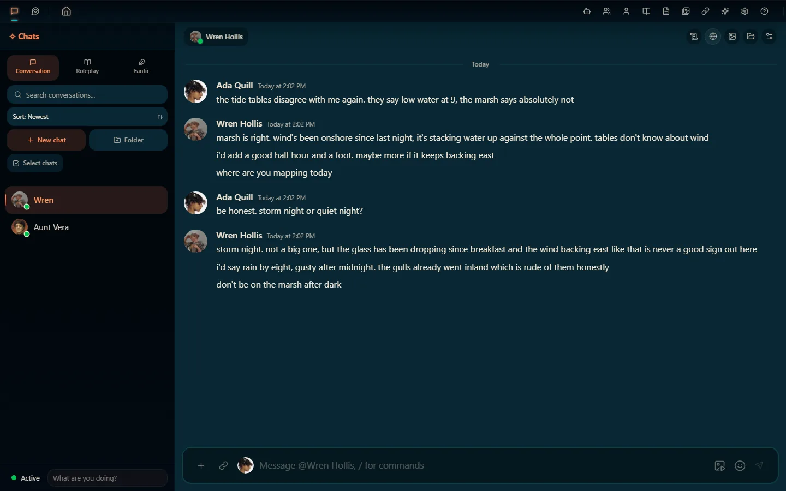
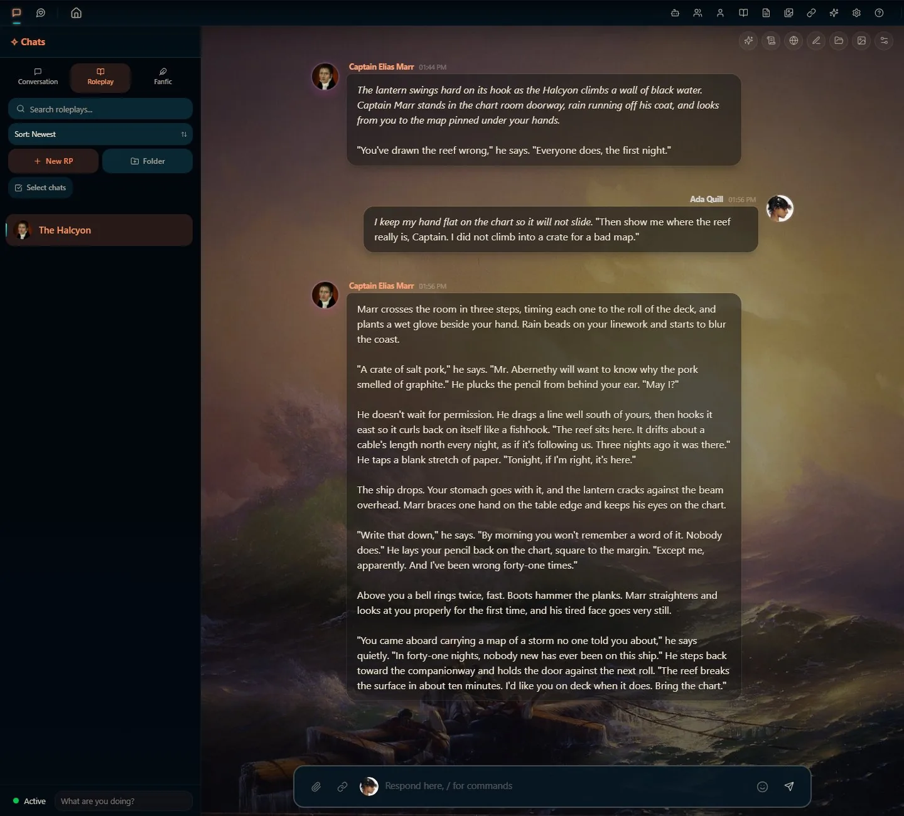
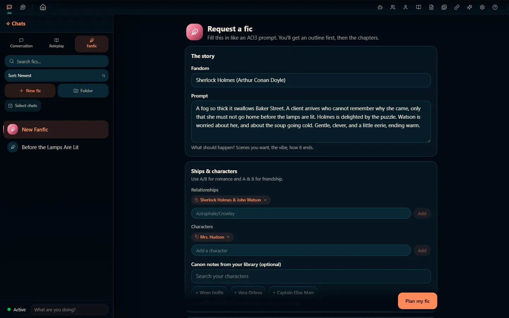
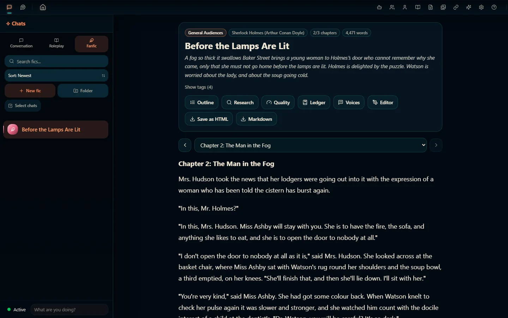
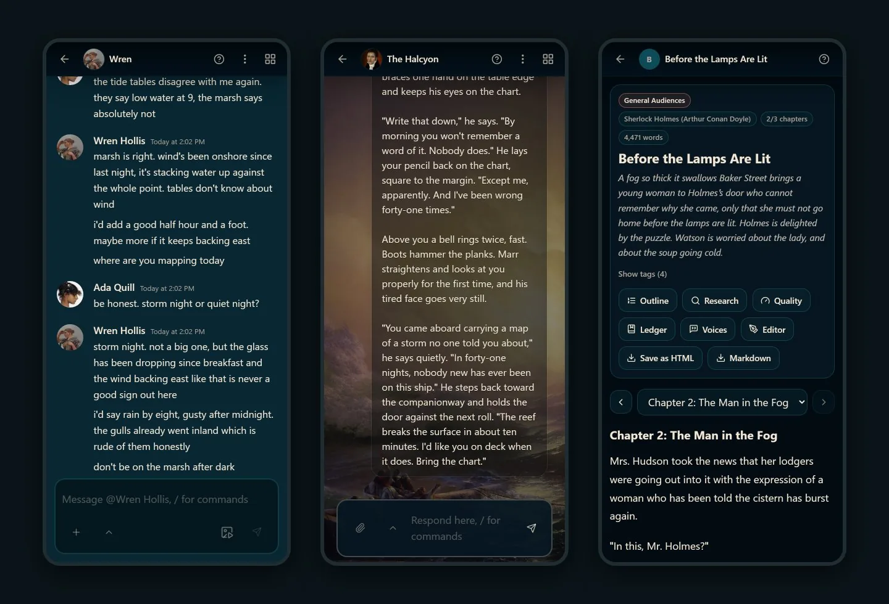

De-Koi
CHAT • ROLEPLAY • FANFIC • ANY MODEL
In beta · Free and open source · How to get it

Deki-senpai
Oh! A new kouhai. Welcome! I'm Deki-senpai, the assistant who lives inside De-Koi.
De-Koi is where you text characters, play out roleplay scenes and order whole fanfics, with whichever AI model you like. It runs on your own computer, a Raspberry Pi or your own server, and your chats stay there with you. Come on, I'll show you around.
Quick vibe check first: if “I put on my robe and wizard hat” is utter nonsense to you, De-Koi probably isn't your thing. If you just snorted, welcome home.
Three ways to play
Pick how you want to tell the story, and switch whenever you like. I won't tell anyone what you write at 3am.
Conversation
Text characters the way you text friends. One-on-one or group chats, characters with statuses and schedules who can message you first, quick reactions, and slash commands.

Roleplay
Scene-based roleplay with personas, character portraits and sprites, backgrounds, choices and lorebooks. For long campaigns, the Continuity Director plans arcs and beats for you to approve, and memory recall keeps earlier events in view.

Fanfic
Request a fic like an AO3 prompt: fandom, ships, rating, tropes, point of view, length. De-Koi can look up the canon online first, shows you an outline to edit or skip, then writes it chapter by chapter. Afterwards it can catch continuity slips, check that characters sound like themselves, and read it to you aloud.


And around all three
The bits that make it all work. Including me, obviously.
- Any modelOpenAI, Anthropic, Google Gemini, Mistral, OpenRouter, xAI and more, any OpenAI-compatible endpoint, your Claude or ChatGPT subscription, or a local model De-Koi downloads and runs for you. New to AI apps? Log in with OpenRouter and start on a free model.
- Your libraryCharacters (SillyTavern cards import too), personas, lorebooks, prompt presets and a gallery, all kept on your own machine.
- Me, Deki-senpaiAsk me how anything in De-Koi works, or have me draft characters and tidy your library. I show you a preview and wait for your OK before I change a thing.
- Voice and picturesCharacters can speak (ElevenLabs, OpenAI or a voice on your own machine), and De-Koi can make images for your scenes.
- On your phone tooHost it on a Raspberry Pi or a server, and the same chats open on your phone and your PC.
- Free and openNo subscription, no ads, no account with us. (Your AI provider may charge for their model, unless you run one locally.)
Every feature, in one long list

Getting De-Koi
De-Koi is in beta, so back up before you install or update. I'm serious. Senpai has seen things.
- Windows
-
The
setup.exefrom the latest release. Windows SmartScreen warns you the first time, because the installer isn't signed yet. - Linux
- The
.AppImageor.debfrom the latest release. - Android
- The
.apkfrom the latest release. To update, install the new one over the old one. - Raspberry Pi
- Ready-made images: the Pi guide, or without Docker.
- Your own server
- The server guide: De-Koi as a web app for your phone and PC.
- Mac
- No build yet. You can run it from the source code.
Stuck? Step-by-step install help. Windows and Linux builds update themselves once you say yes.
Where De-Koi comes from
Now the serious part. Senpai can be professional for two whole paragraphs.
De-Koi is an unofficial project that began as a fork of Marinara Engine and has been substantially reworked since. It's a separate project: not an official Marinara Engine release, and not sponsored or endorsed by Marinara Engine, Spicy Marinara, Pasta Devs or the Marinara Engine project.
It's free software under the GNU AGPL-3.0, so the source code for every version is on GitHub. It's made by The Koi Pond and other contributors, with a lot of AI help, like all our apps.
That's the tour! Go make something dramatic. I'll be in the app if you need me.